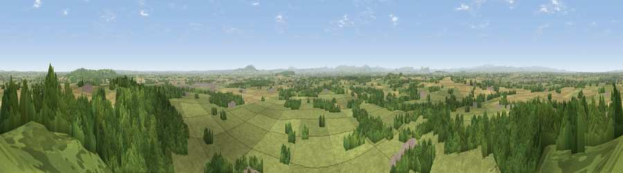

Grinshill
#2556 in England · top 7% of its area beats it · near GrinshillThe view, rendered

A 360° render of this exact spot computed from the terrain model, tree cover and land cover — summer colours, afternoon light, calibrated against photographs of famous viewpoints. Real trees, hedges and buildings will differ in detail.
The panorama
Grey silhouette: terrain skyline in each direction (720 bearings, Earth curvature and refraction included). Dashed green: skyline with trees (+15 m) and buildings (+8 m) as obstacles. Blue strip: how far the ground is visible on each bearing.
Where the view opens
Wedge length = distance to the farthest visible ground on that bearing (vegetation-aware). Rings at 10, 25 and 50 km.
What fills the view
54% grassland · 28% woodland · 16% cropland · 2% built-up
Angular shares of the visible panorama (visual magnitude), not map area. Landscape diversity 0.46 (0–1 Shannon).
Key numbers
More beautiful places nearby
The staircase of upgrades: each row has a higher view potential than everything closer. Driving times are estimates from straight-line distance, calibrated against real road routing — check an actual route before setting out.
| Place | Direction | Drive | Score |
|---|---|---|---|
| Viewpoint near Weston-under-Redcastle | NE · 8 km | ~16 min | 77.0 |
| Viewpoint near Marchamley | ENE · 8 km | ~16 min | 77.5 |
| The Ercall | SE · 19 km | ~32 min | 79.4 |
| Viewpoint near Little Wenlock | SE · 19 km | ~32 min | 84.2 |
| The Wrekin | SE · 19 km | ~33 min | 85.0 |
| Viewpoint near Little Wenlock | SE · 19 km | ~33 min | 86.6 |
| North Hill | SSE · 81 km | ~105 min | 86.8 |
| Worcestershire Beacon | SSE · 82 km | ~106 min | 87.1 |
52.80937, -2.71465 · source: osm peak · position refined by local search. Computed location — check access rights before visiting.